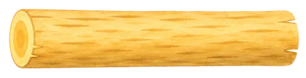
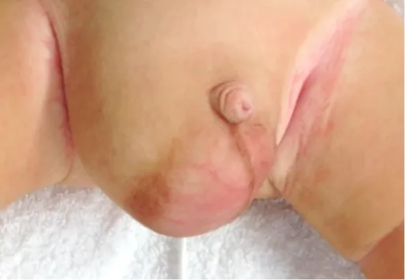
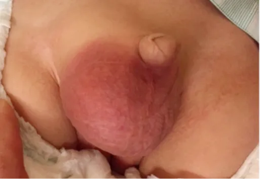
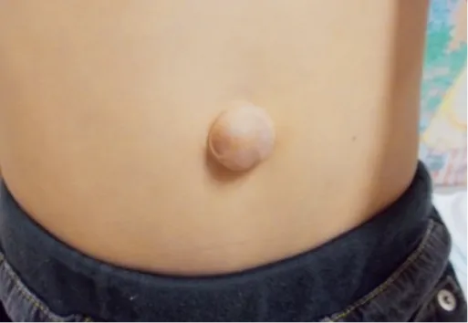
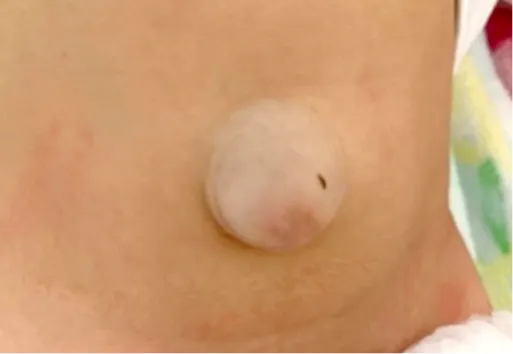
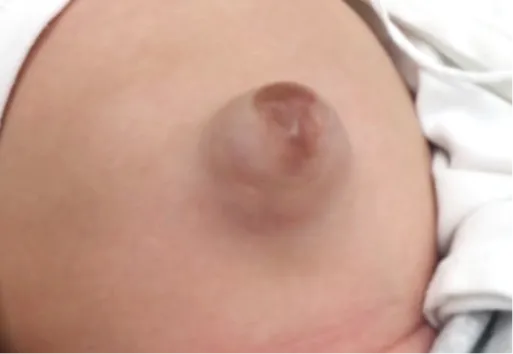

「夜尿症」とは、5歳以上で月1回以上のおねしょ（夜間尿失禁）が続く状態をいいます。子どものおねしょは成長過程でよくみられ、5歳児では約20％、10歳児でも約5％にみられます。
鼠径ヘルニアは、お腹の中の腸などが足の付け根（鼠径部）から陰嚢へ飛び出してしまう状態で、泣いた時や力んだ時に膨らみが目立ちます。一般的には「脱腸」とも言います。放置すると腸が戻らなくなる「嵌頓」を起こす事があり、診断された場合は手術が勧められます。陰嚢水腫は陰嚢内に水がたまる病気で、多くは痛みなく自然に改善しますが、経過観察や治療が必要な場合もあります。当院では小児外科専門の視点から診察を行い、お子さまの状態に合わせて適切な治療方針をご提案します。


臍ヘルニアは、いわゆる「でべそ」とは異なり、おへその部分から腸や脂肪が外に出てふくらむ状態です。臍の緒が取れた後、おへそを塞ぐ筋肉が弱いことが原因で、泣いたりお腹に力が入るとふくらみが目立ちます。多くは1〜2歳頃までに自然に治るため、まずは経過をみることが一般的です。大きく残る場合や改善しない場合には手術を検討します。臍突出症は、腹腔内との交通がない状態の突出した臍（でべそ）の状態であり、整容性の面から手術を検討します。


